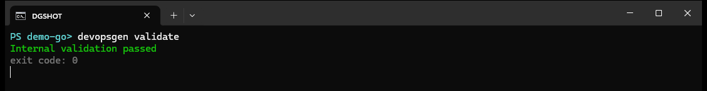

command reference
devopsgen validate
Statically lint DevOpsGen output — Dockerfiles, GitHub Actions workflows and Kubernetes manifests — so problems surface on your laptop instead of pipeline number forty.

synopsis
devopsgen validate [flags] # validate the current project
devopsgen validate --output-dir ./configsWhat it checks
Docker
FROMinstruction is present- no
docker login(credentials) inside image builds COPY/ADDfree of shell chaining (&&,||,2>/dev/null)
GitHub Actions
- parses as a single workflow document with
name,on,jobsand steps - a
actions/checkoutstep exists - the image push references the commit SHA tag
- no unrendered template actions leak into the output
Kubernetes
- Deployment: selector ↔ template label consistency, unique container names, integer
containerPortin 1–65535 - Service: selector plus
port/targetPortpairs - Ingress:
networking.k8s.io/v1, validpathType, wiredbackend.service - Service ↔ Ingress backends stay consistent
Exit behaviour
- 0 — all documents passed.
- 4 — a document failed lint rules, does not parse, or required artifacts are missing.
- 1 — the output directory itself could not be read.
- 2 — malformed input (invalid flags).
Combine with devopsgen init in CI: generate, commit, validate, deploy — the exit codes page maps every failure class.
Combine with devopsgen init in CI: generate, commit, validate, deploy — the exit codes page maps every failure class.